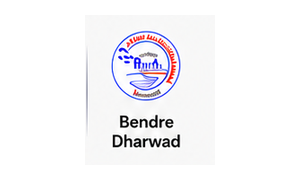
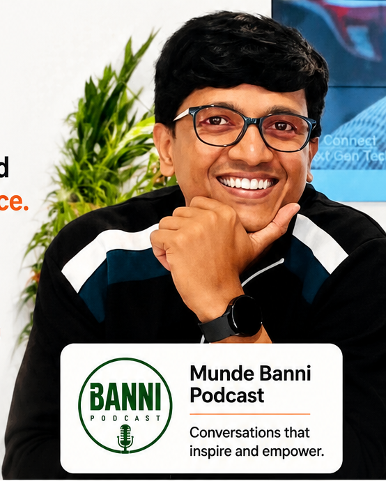

July AdmissionsGoal · 80 admissions
Plan campaign
Set the goal, budget, timeline, owners and success metric.
Plan WhatsApp, email, ads, events, content and customer campaigns from one dashboard. Track what worked, what failed, and what your team should do next.
Trusted across Healthcare, Education and Media

When planning, execution and reporting live in different places, your team works harder and still cannot answer the simplest question: what actually worked?
Pulze connects planning, execution, automation, reporting and AI recommendations into one operating system your whole team can understand.
Explore the platform →Every stage stays connected, so your team knows where the campaign stands and what happens next.
Set the goal, budget, timeline, owners and success metric.
Target the right people using real engagement and intent.
Coordinate WhatsApp, email, ads, social and events.
See conversion, cost, revenue and channel contribution live.
Follow up with 148 warm leads today.
Act on the clearest opportunity before momentum disappears.
Pulze studies every campaign and tells your team where money is being wasted, which audience is warming up, which message is working, and what action to take next.
See the intelligence layer →Prioritize counselor calls and WhatsApp follow-up before Thursday.
91% confidenceMove the next reminder to WhatsApp.
Refresh creative or pause the lowest-performing set.
Past evening sends generated 24% more registrations.

Munde Banni PodcastPulze transformed how we reach our audience.
Launches, newsletters, webinars and meetups needed manual coordination.
Every content moment became a repeatable campaign workflow.
Everything reaches the right audience at the right time.
Patient education, reminders and event communication required manual effort.
Communication became structured, timely and audience-specific.
No oversized software contract. No technical team required. We understand your campaigns first, then configure Pulze around the way your team actually works.

“Indian teams deserve enterprise capability without software that takes months to understand.”Vinay MruddiCo-Founder & CEO · myPAL
See Pulze using your own campaign workflow in a focused live walkthrough.